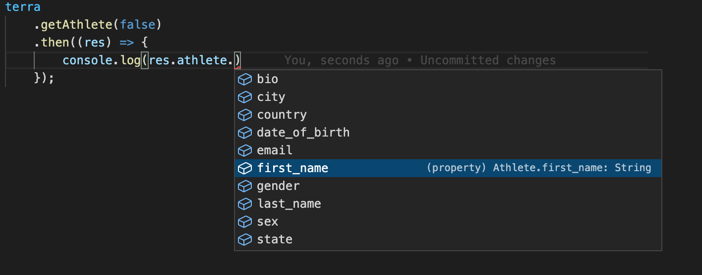

A wrapper in javascript for the Terra endpoints and models.
Full API reference: https://tryterra.github.io/terra-client-js
Check the example server with a webhook in /example!
Install using
npm i terra-api
Then import the default Terra package from terra-api.
Initialise a new Terra instance with:
const terra = new Terra(process.env.DEV_ID, process.env.API_KEY);
Now you can call the following functions from the instance, for example:
generateWidgetSessiongetProvidersgetUsersgetUserdeauthUsergetAthletegetActivitygetBodygetDailygetSleepgetMenstruationCheck the full reference on https://tryterra.github.io/terra-client-js/
In addition, all the data models documented on https://docs.tryterra.co/data-models are available to import and use. For example
const terra = new Terra(process.env.DEV_ID, process.env.API_KEY);
terra
.getAthlete("1234-user-id-5678", false)
.then((res) => console.log(res.athlete.first_name))
.catch((e) => console.log(e.status, e.message));
The models support autocompleting the types to manipulate data coming from Terra, which should accelerate your backend development:

Generated using TypeDoc